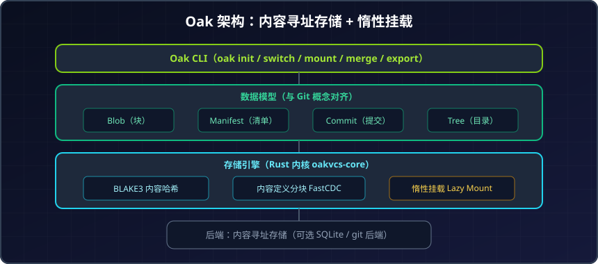
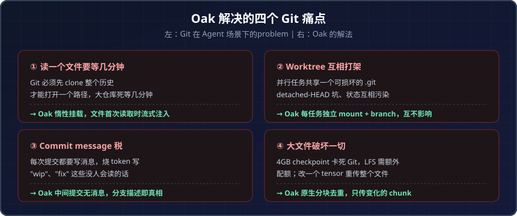

Git 不是为 Agent 设计的：开源新秀 Oak 如何用 95% 的提速挑战版本控制霸主
序言：当写代码的不再只是人
Git 诞生于 2005 年，Linus Torvalds 为管理 Linux 内核而生。它的每一个设计——commit message、worktree、全量 clone——都是为人类开发者优化的。
但 2026 年，一个新的现实摆在面前：写代码的越来越多是 AI Agent。Claude Code、Codex、Cursor 这些智能体一天能产生几百次提交、并行跑十几个任务、动辄操作几 GB 的模型 checkpoint。
在这种节奏下，Git 开始显得力不从心：读一个文件要先 clone 整个历史、并行 worktree 互相打架、每次 checkpoint 都被逼着写一句没人看的 commit message。
Oak 就是冲着这些痛点来的。它是一款用 Rust 编写、专为 Agent 工作流设计的开源版本控制系统，宣称在快照、状态检查和大文件操作上能做到比 Git 低 最多 95% 的延迟。
这篇文章帮你完整拆解：Oak 到底是什么、它怎么解决 Git 的老problem、性能数据是否可信，以及它和 Git 的真实差距在哪。
一、Oak 是什么：一句话定位
Oak = 为人和 Agent 协作而设计的版本控制底座（agentic substrate）。
它由 Zach Geier 主导开发，Adam Morse 负责产品与视觉设计，背后是 Oakspace Inc.，目前处于 BETA 阶段，最新版本 v0.99.0。
核心信息：
- 语言：Rust（核心 crate 名
oakvcs-core） - 安装：
curl -fsSL oak.space/install | sh - 平台：macOS（Apple Silicon）、Linux（x86_64）；Linux ARM64 和 Windows 在路线图上
- 后端：内容寻址存储，可选 SQLite 和 git 后端
- 隐私：不在你的代码上训练模型，不代替你调用任何 AI
关键定位在于：它不是又一个 Git GUI 或包装层，而是从存储和分支模型层面重新设计的底座。开发者认为，与其在 Git 之上叠加工具，不如直接做一个 Agent 原生的底层。
Oak 的理念是：与其在 Git 上面搭东西，不如直接改造底层工作流。让底座本身就是 Agent 原生的。（内容已为符合授权要求进行改写）
二、核心架构：内容寻址 + 惰性挂载
Oak 的概念对任何 Git 用户都不陌生——commit、branch、repo、push/pull 全都在。但底层实现完全不同。

▲ Oak 的数据模型（Blob/Manifest/Commit/Tree）表面与 Git 相似，但底层用 BLAKE3 内容哈希 + 内容定义分块 + 惰性挂载，避免重复哈希整棵树和全量传输。
三大技术支柱
- BLAKE3 内容哈希：比 Git 的 SHA-1 更快的现代哈希算法，用于内容寻址。
- 内容定义分块（Content-Defined Chunking / FastCDC）：把文件切成内容定义的块，跨版本、跨仓库去重。改一个 tensor，只有那个 chunk 需要传输。
- 惰性挂载（Lazy Mount）：
oak mount把仓库投射成一个工作树，无需全量 clone，文件在首次访问时才流式注入。
数据模型
Oak 的对象模型是 Blob / Manifest / Commit / Tree：
- Blob：文件内容的块
- Manifest：描述一个快照包含哪些文件和块
- Commit：一次检查点
- Tree：目录结构
这套模型与 Git 的 blob/tree/commit 高度相似，因此心智模型可以无缝迁移——你和你的 Agent 都不需要重新学习。
三、为 Agent 解决的四个 Git 痛点
这是 Oak 价值主张的核心。每一个痛点都是 Git 用户多年来的老problem，在 Agent 场景下被进一步放大。

▲ Oak 针对 Agent 工作流的四个核心改进：惰性挂载、独立 mount、无消息检查点、原生分块去重。
痛点一：读一个文件要等几分钟
Git 的problem：在打开任何一个路径前，你必须先 clone 整个历史。在大仓库上，这意味着几分钟的死等，还要花 token 看着进度条转。
Oak 的解法：oak mount 无需全量 clone 即可挂载，文件首次读取时才流式注入。大仓库在 git clone 还在数对象的时候，就已经可用了。
痛点二：Worktree 互相打架
Git 的problem：并行跑多个任务意味着共享一个可被损坏的 .git、detached-HEAD 的坑、以及 worktree 之间半应用状态的互相污染。一个坏掉的 index，所有 session 都卡住。
Oak 的解法：每个任务有自己独立的 mount + branch。拆掉一个，其他的毫发无损——没有共享的 .git 可以损坏，没有 detached-HEAD 的坑。
痛点三：Commit message 税
Git 的problem：Git 要求每次提交都写一句话。你为了给自己的进度打个 checkpoint，被迫烧 token 写 "wip"、"fix"、"address review" 这些没有任何人会读的消息。
Oak 的解法：中间提交不带消息。分支描述是唯一的真相来源，只需在最后描述一次分支。合并时，这条分支描述就成为 squash commit 的消息。
$ oak switch -c feat/oauth
$ oak desc "Replace REST auth with OAuth + PKCE"
$ oak merge # squashed onto main
痛点四：大文件破坏一切
Git 的problem：一个 4GB 的 checkpoint 会卡死 Git。LFS 是独立的配额、额外的配置、又一个容易出错的东西；而且改一个 tensor 它仍然会重新上传整个文件。
Oak 的解法：原生分块 + 去重。push 一个 4GB checkpoint，改一个 tensor，再 push——只有变化的 chunk 会传输。
四、性能数据：95% 提速是真的吗？
Oak 公布了一组可验证的基准数据（官方提供了 benchmark harness 供自行复现）。核心结论：
| 操作 | Git | Oak | 提升 |
|---|---|---|---|
| 快照 5 万文件 | 29.7s | 1.4s | −95% |
| 挂载大仓库 | 全量 clone | 无需前置 clone | 流式注入 |
| push | 全量传输 | 只传变化的 chunk | 按需 |
官方明确说明了 Oak 占优和劣势的场景：
- Oak 占优：初始快照、脏快照（dirty snapshot）、大二进制文件的 diff/status、Agent setup——p50 延迟比 Git 低最多 95%。
- Git 仍占优：冷仓库 init 和进程启动。Oak 在这些固定开销上仍需付出小的代价。
关键 Insight
Oak 的提速逻辑是避免重复劳动：内容寻址存储意味着不重复哈希整棵树，惰性挂载意味着不等 clone，内容定义分块意味着不传输已有的数据。
值得注意的诚实之处：Oak 官方承认它不是在所有场景都更快。冷启动和进程 spawn 上 Git 依然领先。使用 Oak 的理由是长时间运行的 Agent session 中的那个循环——快照、状态检查、大文件操作可以快得多。
五、分支模型：本地 feature 分支 + 服务器 squash
Oak 的分支模型是它对 Git 工作流最大的"意见"，专为高分支量和频繁快照设计。
四条核心规则
- 本地永远在 feature 分支：
oak init创建一个 parent 到 main 的分支。main只存在于服务器上，所以没有本地 main 会漂移。 - 中间提交不带消息：分支描述是真相来源，想 checkpoint 多频繁都行，无需发明语句。
- Merge 是服务器端 squash：单一主线 commit 的消息就是分支描述。squash 前的提交链仍然可达，供工具使用。
- 拒绝直接 push 到 main：除了空仓库的首次 push，Oak 拒绝直接 push 到 main——不会因为配置错误的 Agent 而意外 fast-forward。
这个模型的好处是：Agent 可以疯狂 checkpoint 而不污染历史，最终合到 main 的只是一条干净的、带有意义描述的提交。
六、Mount 与 Space：组织级工作区
Oak 引入了两个新概念来管理并行工作：
Mount（挂载）
oak mount 把仓库投射成工作树，manifest 在挂载时下载，文件内容首次读取时流式注入。每个任务有自己的工作树、自己的分支。
$ oak mount acme/app ./fix-auth
# fetched manifest · 2.4MB · 0 blobs
# mount ready at ./app (lazy) · files hydrate on read
Git 的等价操作是：先 clone 整个仓库（几分钟），再为每个任务 git worktree add，全都共享一个容易损坏的 .git。
Space（空间）
Mount 不是凭空漂浮的——一个 space 为整个组织开一个工作区，每个任务是它的一个子目录。在里面你 oak mount 任务涉及的仓库，所以跨仓库的改动可以把分支并排放在一起。一个子目录就是一个任务，开下一个几乎是瞬时的——背后没有 clone。
这对于多 Agent 并行场景特别有价值。如果你对多智能体协作感兴趣，可以参考我们的 多智能体协作框架选型指南。
七、Oak vs Git：全方位对比
把两者放在一起看：
| 维度 | Oak | Git |
|---|---|---|
| 设计目标 | Agent 原生工作流 | 人类开发者（2005） |
| 分支模型 | 分支即 session，描述即消息 | 分支 + commit 消息 + PR 标题 |
| 大文件 | 原生 FastCDC 跨版本去重 | 需 LFS，独立配额，额外配置 |
| 首个工作树 | 惰性挂载，无需全量 clone | 前置全量 clone，大仓库几分钟 |
| 单仓库并行任务 | 每任务独立 mount + branch | git worktree，共享脆弱的 .git |
| 快照速度 | p50 低最多 95%，瞬时再快照 | 重新哈希整棵树，大仓库几秒 |
| Agent 提交体验 | 中间提交无消息 | 每次提交都需消息 |
| 数据可移植 | oak export → 全新 git repo |
原生 |
| 在你代码上训练 | 从不，Oak 不调用 AI | 视平台和计划而定 |
| issue/CR/CI/生态 | 暂无，自带或在路线图 | 原生、成熟、十年积累 |
不被锁定
Oak 特别强调数据可移植性：oak export <dest> 把完整分支历史回放到一个标准 git repo，保留每个 commit 的 author、email 和 timestamp。还有一个只读的 git Smart-HTTP 端点，让标准 git clone 可以拉取当前 main 树。
换句话说，你随时可以回到 Git，数据是你的，以标准格式提供。这大大降低了尝试 Oak 的迁移风险。
八、Oak 不做什么：清醒的边界
Oak 团队对自己的定位很诚实——它不是 GitHub 的替代品。
GitHub 做的一百件事 Oak 都不做：issues、GitHub 风格的 code review、Actions、十年深度的生态。但 Git 和 GitHub 共享的是一个从未为 Agent 设计的模型。
Oak 的定位很明确：
- 它只是底层的 VCS
- 你自带 Agent（Claude Code、Codex、Cursor），那是各自独立的集成、各自的隐私策略
- issue/code review/CI 这些"要么自带、要么在路线图上"
这种克制反而让它的价值主张更清晰：Oak 只想把版本控制这一层为 Agent 做到最好，不贪多。
九、谁该现在尝试 Oak
直接给判断：
适合现在尝试的信号：
- 你大量使用 AI 编程 Agent，且痛于 Git 的 commit message 税和 worktree 冲突
- 你的项目涉及大文件（模型 checkpoint、数据集、二进制资产）
- 你需要并行跑多个 Agent 任务，且受够了共享
.git的脆弱 - 你在 macOS（Apple Silicon）或 Linux（x86_64）上工作
- 你愿意尝试 BETA 工具，且看重"随时能导回 Git"的安全感
暂时观望的信号：
- 你的团队工作流深度绑定 GitHub 的 issues/PR/Actions
- 你在 Windows 或 Linux ARM64 上（暂未支持）
- 你需要成熟的第三方生态和大量教程（Oak 还很新）
- 你的仓库小、提交频率低，Git 的痛点对你不明显
小结
Oak 不是要"杀死 Git"——它的团队自己都说 Git 很棒。它要回答的是一个更具体的问题：当写代码的主力从人变成 Agent，版本控制应该长什么样？
它的答案是：内容寻址避免重复哈希、惰性挂载避免全量 clone、内容定义分块避免重复传输、无消息检查点避免 token 浪费、独立 mount 避免并行冲突。这些加起来，就是那个"最多 95% 提速"的来源。
Oak 现在还是 BETA，生态尚浅，平台支持有限。但它代表了一个清晰的趋势：基础开发工具正在被 Agent 时代重新定义。从 IDE（Cursor）到 Agent 框架，再到现在的版本控制——每一层都在问同一个problem：如果用户主要是 AI，这个工具该怎么重做？
值得关注，可以小范围尝试，但暂时别把生产仓库全押上去。这是面对一个有潜力的 BETA 工具，最务实的姿态。
免责声明
本文为技术调研与分析，所涉性能数据来自 Oak 官方公布的基准测试，实际表现可能因仓库规模、硬件和工作负载而异。Oak 目前处于 BETA 阶段，功能和 API 可能频繁变化。文中不构成任何技术选型的最终依据，请读者结合自身场景独立评估。
参考来源
- Oak 官网 — Version control at the speed of agents
- Oak v0.99.0 Released: An AI-Friendly Git Alternative with BLAKE3 and Content-Defined Chunking - KuCoin News
- oakvcs-core — Rust crate, Lib.rs
- Why Git Stands Out in 2026 - TheLinuxCode
- Comparison of version-control software - Wikipedia
相关阅读
- 多智能体协作框架选型指南 2026
- IBM CUGA 企业级通用 Agent 框架深度解读
- Vibe Coding 的隐性成本与安全风险
- 闭源 AI 编程工具对比 2026
- CodeGraph：AI 编程知识图谱评测
推荐搭配装备
善其事，利其器。以下硬件能最大化你的AI体验👇
🔗 通过以上链接购买可支持本站持续运营 🙏